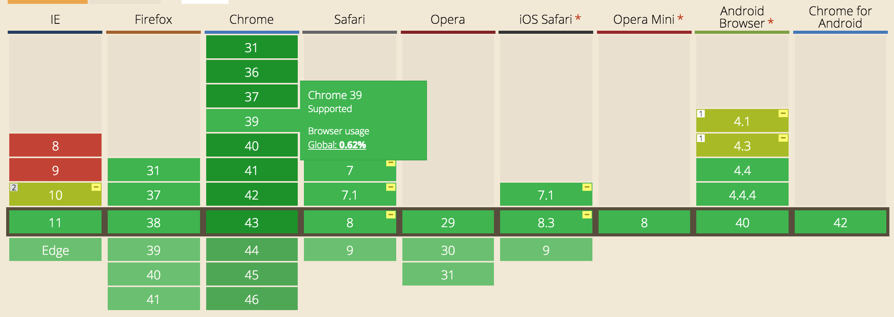
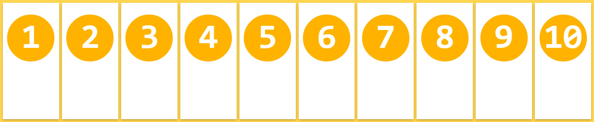
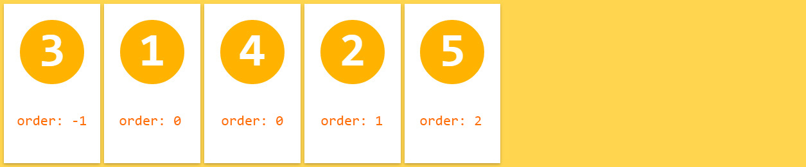
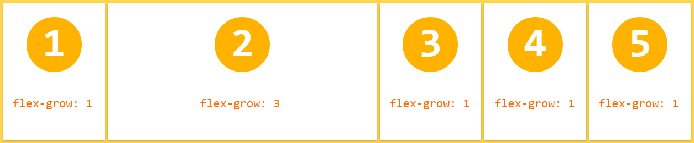
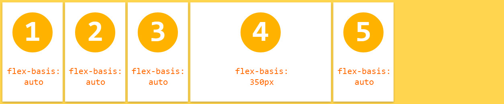

Flexbox: CSS3 Layout Mode
Qué es flexbox?
Es un modo de diseno para controlar predeciblemente
los elementos de una pagina
los elementos de una pagina
Aún cuando los elementos tienen tamanos
desconocidos o dinámicos. (yey)
desconocidos o dinámicos. (yey)
No mas Float's
Originalmente los float fueron creados para wrapear
imagenes con textos en una pagina web.
imagenes con textos en una pagina web.

Problemas del Float
Im floating left
I'm
floating left
too
floating left
too
I'm also
floating left
floating left
Hay que "limpiar" los floats.
Otros problemas
No tienen centrado vertical
No tienen orden. (se necesitan js)
Volviendo a Flexbox.. Propiedades:
Habilidad para alterar el ancho y alto de elementos.
Mejor uso del espacio. Se adaptan "magicamente".
Especificar el orden de los elementos,
de manera de independizarse del código fuente.
de manera de independizarse del código fuente.
Utilizar mucho menos código
Soporte en Browsers
 No hay excusas para no usarlo
En safari hay que agregar el prefijo -webkit
Terminología
El flex layout esta constituido por 2 componentes principales:
El parent container y los child items
denominados flex-container y flex items, respectivamente.
denominados flex-container y flex items, respectivamente.
Modelo de ejes

Lo que nos interesa: Uso
Un parent container se define con:
.flex-container {
display: -webkit-flex; /* Safari */
display: flex;
}
Dirección
Especifica la dirección de los items
en el flex container.
Se setea la dirección del eje primario:
.flex-container {
-webkit-flex-direction: row; /* Safari */
flex-direction: row;
}
.flex-container {
-webkit-flex-direction: column; /* Safari */
flex-direction: column;
}

Se pueden disponer también al reverso!
flex-wrap
Por default, flexbox dispone los elementos en una sola linea.
Adapta los anchos de los hijos para que queden adentro del container.

Adapta los anchos de los hijos para que queden adentro del container.
flex-wrap
.flex-container {
-webkit-flex-wrap: wrap; /* Safari */
flex-wrap: wrap;
}
Flex-flow
Atajo para no poner flex-wrap y flex-direction
Justify-Content
:D
Propiedad que permite alinear los elementos
flex-start
.flex-container {
-webkit-justify-content: flex-start; /* Safari */
justify-content: flex-start;
}
flex-end
.flex-container {
-webkit-justify-content: flex-end; /* Safari */
justify-content: flex-end;
}
center
.flex-container {
-webkit-justify-content: center; /* Safari */
justify-content: center;
}

space-between
.flex-container {
-webkit-justify-content: space-between; /* Safari */
justify-content: space-between;
}

space-around
.flex-container {
-webkit-justify-content: space-around; /* Safari */
justify-content: space-around;
}
Existen las mismas propiedades para el cross axe
con la propiedad align-content
con la propiedad align-content
Align-items (Awesome!)
Stretch
flex-start
flex-end

Vertical align?
vertical-align: middle; not
vertical-align: middle !important; not
sudo vertical-align: middle !important; lol
Vertical align
.flex-container {
-webkit-align-items: center; /* Safari */
align-items: center;
}
PROPIEDADES de los items
Order
Grow
Basis
.flex-item {
order: <integer>;
}
.flex-item {
flex-grow: <number>;
}
.flex-item {
flex-basis: <width>;
}



Esto No es todo!
Flexbox Layout en Angular Material.
Material design trae implementado este layout
<div layout="row" layout-wrap>
<div flex="50" flex-order="1">
item 1
</div>
<div flex="50">
item2
</div>
</div>
para setear anchos (flex-basis) en los items se usa flex="number"
para los ordenes de los items flex-order
Para multilineas se agrega layout-wrap
Para setear alineaciones se utiliza layout-align="property"
para los ordenes de los items flex-order
Para multilineas se agrega layout-wrap
Para setear alineaciones se utiliza layout-align="property"
La gran Ventaja del layout de Angular Material
MEDIA QUERIES
layouts disponibles
media queries para basis
layout-lg
layout-gt-lg
layout-md
layout-gt-md
layout-sm
layout-gt-sm
flex-lg
flex-gt-lg
flex-md
flex-gt-md
flex-sm
flex-gt-sm